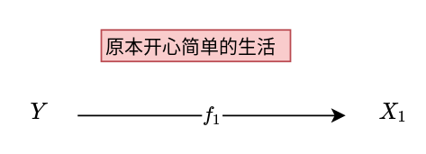
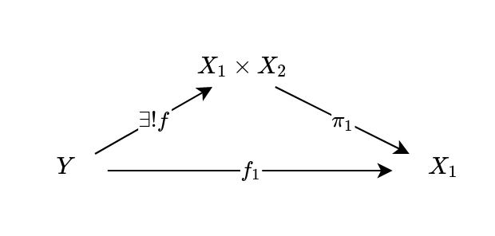
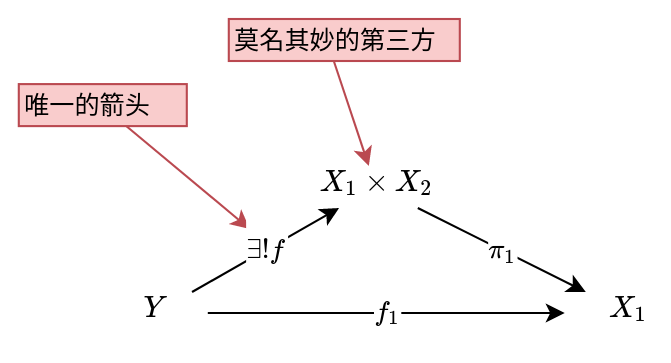
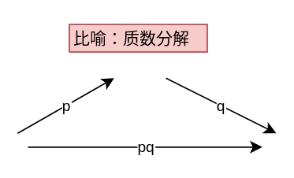

万有性质
万有性质如同黑洞，令所有路径强行改道。
万有性质在范畴论里面不仅重要，而且理解了之后还很美（很多时候，重要跟美是相同的）。
范畴论的核心是箭头（morphism）而不是对象（object），我们通过箭头也就是对象之间的关系来理解范畴的结构（一个极端的例子就是将一个群看做只有一个对象的范畴，群的元素成了一个个指向自己的箭头）。
有一些范畴的性质往往需要提及这一范畴中的所有对象，而这一$\forall$量词就是“万有”的来源。
Properties … are called ‘universal’ because they state how the object being described relates to the entire universe in which it lives.
我们可以用一个比喻来想：万有指的就是无处不在，绕不开，因此必须factor through万有物体（universal object）。因为物体是性质的载体（object is bearer of properties，不过这是哲学里争论很大的一个话题，暂且不谈），万有物体指的就是具有万有性质的物体。
范畴论往往用箭头来画图，我们就顺着这种比喻来说：箭头是路径的话，那么万有性质指的就是，任何路径都必须经过万有物体，留下买路钱。
万有物体像是有着万有引力，吸引着所有的物体经过此处
另外一个特性是：唯一性，即，经过万有物体的路径只有一条。这一唯一性解释了为什么我们往往说万有性质往往跟某种“最优解”有关（例如initial/terminal object等“边界条件”）。看到这里有没有觉得似曾相识？竟莫名想到群环模里面的UFD。
做多了数学证明的人也可以感到似曾相识，我们有着一个典型的$\forall X \exists ! Y$句式（注意这个感叹号）。
用故事来说：我们好好的一个图，非要扯出来一个特殊的对象，然后扯出来的第三方对象跟已有的图之间存在唯一的一个箭头。
因此，万有性质有这么几个配方：
- 我们所要讨论的对象和morphism，因为不具体，所以往往是以“任何一个”开头。
-
一个特殊的第三方对象。
- 第三方对象跟我们讨论的对象之间存在唯一的箭头，这个莫名其妙的第三方对象就是万有物体，因为万有，所以特殊，要单独拎出来。
往往我们看到“莫名其妙的第三方对象”，“第三方对象跟已知对象之间唯一的箭头”这些要素，就可以意识到肯定某些地方藏着万有性质。
我们举一个最经典的例子，乘积。
我们可以从Y的角度开始想，对于任何一个Y，我们有着自己连接$X_1$的箭头。

结果突然冒出来了一个“必经”的第三方

这其中：

这个冒出来的第三方就是万有物体，强行分解(factorize)路径。
这种唯一的路径分解很像算数基本定理里面的质数分解：
